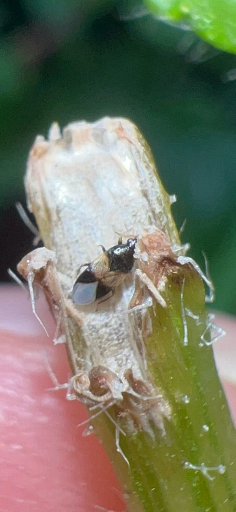

← Toutes les fiches · Auxiliaire · insecte
Orius insidiosus

Petite punaise ailée, prédatrice de tous les stades mobiles des thrips. Les adultes sont noirs avec des marques blanches et crème sur les ailes. Les plus jeunes nymphes sont jaunes, les plus âgées brun acajou foncé.
Sensible à la longueur du jour : à ne pas lâcher avant la mi-mars, sauf si la serre offre au moins 13 heures de lumière, par exemple avec un éclairage d'appoint.
Chercher adultes et nymphes dans les fleurs lors du tapotage sur feuille blanche.
Proie préférée : thrips. Consomme aussi du pollen, des tétranyques, des pucerons, des aleurodes, des œufs de papillons et de jeunes chenilles.
Fiche du guide Parcelle, version 2026-11-15b. Aucune recommandation de traitement. Les publications de l'Ontario sont écrites pour l'Ontario.